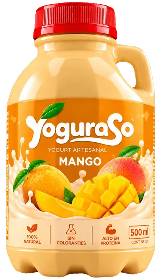
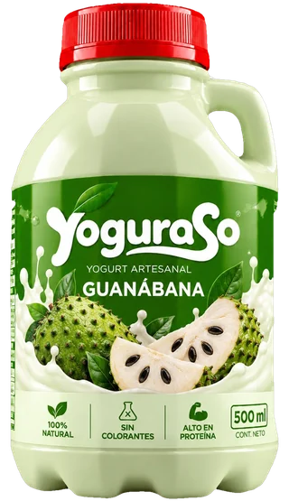

Siempre en la nevera
Guárdalo refrigerado desde que lo recibes. No lo dejes al sol ni fuera del frío.
Desliza y abre la ficha de cada sabor para ver cómo se conserva y con qué disfrutarlo.
Yogurt natural, sin conservantes ni aditivos innecesarios.
Leche fresca y cultivos vivos en cada preparación artesanal.
Atendemos hogares, tiendas y cafeterías con entrega local en 24 horas.
Elige sabores y confirma por WhatsApp; te ayudamos con cantidades y presentaciones.
Un proceso sencillo y cuidadoso, en pequeñas tandas, para que el sabor llegue como debe.
Partimos de leche fresca, el punto de partida de todo buen yogurt.
Fermentamos con calma con cultivos vivos hasta lograr la textura cremosa.
Le damos su sabor: fresa, mora, mango, café y los demás de la casa.
Lo envasamos y lo mantenemos refrigerado hasta que llega a tus manos.

La misma botella para todos los sabores: cada uno con su color, para encontrar el tuyo de un vistazo en la nevera.
Cuatro cuidados para que cada vaso sepa igual de rico que el primero.
Guárdalo refrigerado desde que lo recibes. No lo dejes al sol ni fuera del frío.
Revisa la fecha de vencimiento impresa en el envase antes de abrirlo.
Tápalo bien, devuélvelo a la nevera y disfrútalo en pocos días.
Sirve con vaso o cuchara limpios y evita beber directo de la botella.
Solo, bien frío, ya es un gusto. Y si quieres más, estas combinaciones nunca fallan.
El desayuno más rápido: un vaso de yogurt, un puñado de granola y listo.
Banano, fresa o mango encima, para un plato fresco.
Licúalo con fruta y hielo para un batido cremoso.
Junto a un pan, una galleta o una arepa a media tarde.
Como capa en un vaso con fruta y galleta triturada.
Elaboramos yogurt a diario con leche fresca y cultivos vivos. Creemos en un producto limpio: sin aditivos innecesarios, con sabor real y textura cremosa.
Además del consumo familiar, atendemos pedidos mayoristas en Neiva y Tello: envases prácticos, sabores rotativos y acompañamiento para que tu negocio ofrezca frescura local.


Leche fresca, cultivos vivos y tandas pequeñas. Así nace cada botella.
Cada sabor con su botella. Leche fresca, cultivos vivos y color propio.
Cargando la frescura del campo...
Si no encuentras tu respuesta, escríbenos y te contestamos por WhatsApp.
Elige tus sabores, agrégalos al carrito y pulsa Comprar por WhatsApp. Se abre el chat con el resumen de tu pedido y ahí acordamos la entrega y el pago.
Sí. Atendemos tiendas, cafeterías y negocios en Neiva y Tello. Escríbenos y te ayudamos con cantidades, sabores y presentaciones.
Atendemos Neiva y Tello, en el Huila. Cuéntanos tu dirección por WhatsApp y te confirmamos si llegamos a tu zona.
Cerrado y en la nevera, hasta la fecha de vencimiento impresa en el envase. Una vez abierto, tápalo bien y disfrútalo en pocos días.
Siempre refrigerado, bien tapado y lejos del sol. Sírvelo con vaso o cuchara limpios.
Lo elaboramos con leche fresca y cultivos vivos, y cada etiqueta trae el detalle de su sabor. Si tienes una alergia o una dieta especial, escríbenos antes de pedir.
Por ahora no. La página arma tu pedido y lo confirmas por WhatsApp, donde te indicamos cómo pagar.
Los sabores pueden rotar. Pregúntanos por WhatsApp cuáles tenemos disponibles hoy.